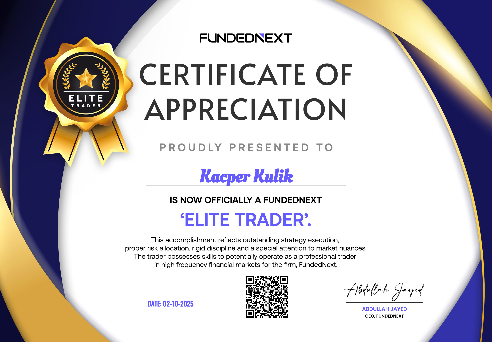

Kacper Kulik
- Wiek: 22 lata
- Miejsce zamieszkania: Kraków
- Forma pracy: Zdalna / Hybrydowa / Stacjonarna
Jestem osobą otwartą i ambitną, która lubi rozwijać się w różnych dziedzinach. Cenię sobie pracę zespołową, kreatywność oraz nowe wyzwania. Poza pracą interesuję się finansami oraz technologią. Na codzień zajmuję się analizą rynków finansowych i programowaniem. Dużo czasu spędzam przed wykresami i kodem, pracując nad stworzeniem skutecznej strategii handlowej, która będzie działać na różnych rynkach. Swoją przygodę zaczynałem od nauki podstaw analizy technicznej – najpierw na rynku kryptowalut, później na Forexie i indeksach CFD. Postawiłem sobie ambitny cel i systematycznie dążę do jego realizacji. Początkowo tworzyłem proste strategie w oparciu o dostępne narzędzia w TradingView i tworzyłem własne indykator w Pine script. Choć nie uważam się jeszcze za profesjonalistę, codziennie handluję, obserwuję ruchy rynków i staram się rozwijać w tym kierunku. Mam nadzieję, że w niedalekiej przyszłości uda mi się osiągnąć zamierzony poziom.
Moja Droga w Tradingu
Początek przygody
Wejście w rynek kryptowalut. Pierwsze kroki w świecie tradingu i poznawanie podstawowych mechanizmów rynkowych.
Nauka przez praktykę
Inwestowanie ze znikomym zyskiem lub większymi stratami. Próby zrozumienia, na czym polega trading i jak działa rynek.
Pogłębianie wiedzy
Nauka czym są rynki, jak działają i czym się różnią. Poznawanie różnych instrumentów: opcje, futures, CFD. Czas głównie przeznaczony na edukację, który niestety wiązał się ze stratami.
Profesjonalny trading
Od ponad roku codziennie handluję kontraktami CFD głównie z indeksów oraz commodities. Zaprzestałem handlu kryptowalutami i w 100% przerzuciłem się na inwestowanie w akcje oraz ETF-y oraz ciągły handel indeksami, walutami oraz różnymi commodities.
Języki
Polski
Język ojczysty
Angielski
C1 - Zaawansowany
Niemiecki
A1 - Podstawowy
Umiejętności & Technologie
Excel & Power BI
analiza danych, tworzenie dashboardów, automatyzacja procesów
Python
Analiza finansowa, backtesting strategii, automatyzacja tradingu
TradingView
Pine Script, tworzenie własnych indykatorów, backtesting strategii
Analiza Techniczna
Volume analysis, FVG, BISI, Fibonacci, formacje świecowe
Risk Management
Position sizing, Risk-to-Reward ratio, zarządzanie kapitałem
C++
Programowanie obiektowe, algorytmy, optymalizacja wydajności
Moje kursy
Day Trading: Mastering Scalp Trading Strategies 2025
Zaawansowany kurs tradingu intraday na rynkach finansowych.
Quantitative Finance & Algorithmic Trading in Python
Kurs algotradingu i finansów ilościowych z wykorzystaniem Pythona.
The Complete Python Bootcamp From Zero to Hero in Python
Kompleksowy kurs Pythona od podstaw po zaawansowane projekty.
Python for Financial Markets Analysis
Kurs analizy rynków finansowych z wykorzystaniem Pythona.
Certyfikaty

Instrumenty Pochodne
Derivative Instruments
Kurs oferuje kompleksowe wprowadzenie do instrumentów pochodnych – kontraktów futures, forward, opcji oraz swapów. Uczestnicy poznają mechanizmy wyceny, strategie zabezpieczające oraz spekulacyjne zastosowania derywatów. Program obejmuje praktyczne aspekty handlu na giełdach oraz rynku OTC, analizę ryzyka i zarządzanie pozycjami. Po ukończeniu kursu uczestnicy potrafią rozróżniać instrumenty giełdowe i pozagiełdowe oraz wykorzystywać je w rzeczywistych sytuacjach finansowych.

Wprowadzenie do Bankowości Inwestycyjnej
Introduction to Investment Banking
Kurs przedstawia fundamenty bankowości inwestycyjnej, w tym fuzje i przejęcia (M&A), emisje akcji i obligacji oraz doradztwo strategiczne. Uczestnicy poznają strukturę organizacyjną banków inwestycyjnych, procesy due diligence oraz metody wyceny przedsiębiorstw. Program obejmuje analizę transakcji, modelowanie finansowe oraz przygotowanie prezentacji dla klientów. Kurs zapewnia praktyczną wiedzę o roli banków inwestycyjnych na rynkach kapitałowych i ich wpływie na gospodarkę globalną.

Cykl Życia Transakcji
Trade Lifecycle
Kurs szczegółowo omawia pełny cykl życia transakcji finansowych – od momentu złożenia zlecenia, przez wykonanie, rozliczenie, aż po archiwizację. Uczestnicy poznają procesy front, middle i back office, systemy zarządzania ryzykiem oraz procedury compliance. Program obejmuje clearing, settlement, reconciliation oraz zarządzanie kolateralem. Kurs zapewnia praktyczne zrozumienie operacji post-tradingowych, standardów rynkowych oraz roli infrastruktury finansowej w zapewnieniu bezpieczeństwa transakcji.

FundedNext Challenge
FundedNext Challenge
Jest to certyfikat potwierdzający przejście etapu w challenge od FundedNext. Program ten stanowi profesjonalne wyzwanie dla traderów, gdzie uczestnicy muszą wykazać się umiejętnościami zarządzania ryzykiem, konsystencją w osiąganiu zysków oraz przestrzeganiem rygorystycznych zasad tradingowych. Przejście etapu potwierdza zdolność do systematycznego i zdyscyplinowanego podejścia do tradingu w kontrolowanym środowisku.
Szczegółowa Historia Mojej Drogi
Etap 1: Początek Przygody (0 lat)
Rozpocząłem swoją przygodę od transakcji spot na rynku kryptowalut. W początkowej fazie nie rozróżniałem jeszcze różnic między kontraktami futures a rynkiem spot. Koncentrowałem się głównie na mniej znanych kryptowalutach, często podejmując decyzje inwestycyjne na podstawie informacji z internetu, oczekując szybkich zysków w perspektywie kilku dni. Z dzisiejszej perspektywy była to naiwna strategia, która stanowiła jednak niezbędny etap nauki.
- Pierwsze transakcje: Spot trading na kryptowalutach
- Nauka: Funkcjonowanie giełd kryptowalutowych, podstawowe mechanizmy rynkowe
- Platformy: Binance, KuCoin
- Największe wyzwanie: Zrozumienie mechanizmów działania giełdy
Etap 2: Nauka przez Praktykę (0-1 rok)
W pierwszym roku zainteresowałem się kontraktami futures, jednak początkowo podchodziłem do nich z nierealistycznymi oczekiwaniami szybkich zysków, co często kończyło się likwidacją pozycji. Równolegle rozwijałem portfolio spot, ale borykałem się z problemem właściwego timingu transakcji. Emocje często przejmowały kontrolę nad decyzjami inwestycyjnymi, prowadząc do strat. Ten okres nauczył mnie fundamentalnego znaczenia dyscypliny i zarządzania emocjami w tradingu.
- Wyniki: Zmienne - okresy zysków przeplatane stratami
- Nauka: Znaczenie dyscypliny, zarządzanie kapitałem, psychologia tradingu
- Narzędzia: TradingView oraz podstawowe indykatory
- Lekcja: Rynek nie wybacza braku przygotowania i emocjonalnych decyzji
Etap 3: Pogłębianie Wiedzy (1-2 lata)
W tym okresie odkryłem wartość systematycznej edukacji poprzez obserwację doświadczonych traderów na YouTube. Regularnie śledziłem sesje live, analizując wykorzystanie narzędzi technicznych i podstaw analizy technicznej. Poszerzyłem wiedzę o formacje świecowe i ich wzorce, wskaźniki techniczne oraz kluczową rolę newsów makroekonomicznych. Po raz pierwszy zrozumiałem wpływ danych gospodarczych ze Stanów Zjednoczonych na dynamikę rynku. Rozpocząłem tworzenie własnych strategii tradingowych, notując stopniową poprawę wyników. Mimo postępów, psychologia tradingu pozostawała wyzwaniem - przedwczesne przesuwanie stop loss i niedokładne określanie punktów wejścia prowadziły do wychodzenia z zyskownych pozycji zbyt wcześnie, często podczas naturalnych retrace'ów kluczowych poziomów.
- Edukacja: YouTube, analiza sesji live doświadczonych traderów
- Nowe rynki: Indeksy CFD (NASDAQ, Dow Jones)
- Instrumenty: Futures, CFD
- Kluczowe odkrycia: Wpływ newsów makroekonomicznych, formacje świecowe, wzorce cenowe
- Koszt nauki: Straty finansowe, ale bezcenna wiedza i doświadczenie
Etap 4: Systemtyczny Trading (2-4 lata - obecnie)
Na obecnym etapie osiągnąłem poziom zaawansowanego zrozumienia mechanizmów rynkowych, choć wciąż pozostaję świadomy obszarów wymagających rozwoju. Początkowe problemy z zarządzaniem stresem i podejmowaniem decyzji w trakcie otwartych pozycji stopniowo ustępowały miejsca większej pewności siebie i zaufaniu do własnej analizy, co przełożyło się na znaczną poprawę wyników. Pogłębiłem wiedzę poprzez kursy na YouTube i Udemy, koncentrując się na zarządzaniu ryzykiem i optymalizacji strategii. Kluczowym odkryciem okazało się position sizing - pozornie prosty, ale niezwykle efektywny element zarządzania kapitałem. Zacząłem wykorzystywać wolumen jako podstawowe narzędzie do określania punktów wejścia, stop loss i take profit, co znacząco poprawiło jakość analiz. Wzbogaciłem arsenał narzędzi o FVG (Fair Value Gap), BISI, Fibonacci i inne zaawansowane techniki, umożliwiające precyzyjne wyznaczanie kluczowych poziomów. Od początku roku prowadzę codzienny trading, poświęcając znaczną część czasu na analizę wykresów. Poza NASDAQ i Dow Jones rozszerzyłem działalność o EUR/USD, kawę, złoto oraz wybrane akcje technologiczne.
- Główne instrumenty: NASDAQ, Dow Jones, INTC, NVDA
- Commodities: Złoto, kawa
- Forex: EUR/USD
- Inwestycje długoterminowe: Akcje spółek technologicznych, ETF-y technologiczne
- Zarządzanie ryzykiem: Position sizing, Risk-to-Reward ratio
- narzędzia: Volume analysis, FVG, BISI, Fibonacci